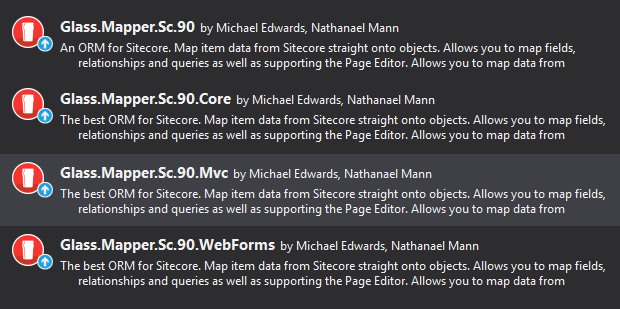

Upgrading To V5
TThis page details the change and steps that you will need to take when upgrading to V5 and details the reason these changes were made.
Nuget Package Changes
The first changei s the structure of the Nuget packages. In V4 there were only two nuget packages for all versions of Sitecore called Glass.Mapper.Sc and Glass.Mapper.Sc.Core, when you installed this Nuget package a powershell script ran which would check the version of the Sitecore.Kernel.dll and the System.Web.Mvc.dll referenced by your project and automatically reference the correct version of the Glass.Mapper.Sc DLLs.
In V5 we have had to remove the powershell script support because it is no longer supported in Nuget v3. Instead we now supply different Nuget packages based on the version of Sitecore being used (see the Compatibility Chart. When you search for the Nuget packages you will see 4 different Nuget packages:

The main Nuget is still Glass.Mapper.Sc., this contains all the configuration files required to initialise Glass.Mapper.Sc. The Nuget package Glass.Mapper.Sc.Core. should be referenced by all projects that use Glass.Mapper.Sc.
Due to the Nuget package name changes it is not a simple case of just using the Nuget update screen. You will need to uninstall Glass.Mapper.Sc V4 nuget packages and then install the V5 Nuget packages as required.
Recompile
All DLLs deployed to the same Sitecore instance must be compiled against V5. Therefore if you are using assemblies supplied by a third party that uses Glass.Mapper.Sc V5 you will need them to supply you new DLLs compiled against V5.
Lazy Loading
Lazy load has changed in V5. In V4 it was necessary to decorate properties manually to turn lazy loading of, for example:
public class Example{
[SitecoreChildren(IsLazy = false)]
public virtual IEnumerable<Child> Children{get;set;}
}
Lazy loading needs to be disabled on a model if it is going to be cached or for other business reasons. In V4 lazy loading had to be disabled on every property in the object graph manually and explicitly, this meant that in some locations on an object graph it would be missed. In large object graphs developers may not even know that they need to disable lazy loading on their model. It also meant that the same model could not be used for lazy and non-lazy scenarios.
In V5 we have decided to simplify this. Firstly the IsLazy setting has been removed from all all property configuration (both attribute and fluent configuration). This has now been replaced by configuring lazy loading when a model is requested from on of the Glass.Mapper.Sc services:
var service = new SitecoreService(database.Database, context);
var target = service.GetItem<stub1>("/sitecore/content/parent/target",x=>x.LazyDisabled());
This will disable lazy loading for all models in the object graph. This is an important change because it is likely that in V4 some models that should have had lazy loading disabled didn't and potentially hid large data loads or recursive models. When upgrading to V5 verify that your models will not load too much data.
Lazy loading will automatically be disabled if a request is marked a cachable.
VersionCountDisabler
The VersionCountDisabled class has been removed. Version count can be disabled when requesting a model:
var langItem1 = service.GetItem(path, x=>x..VersionCountDisable());
This will disable the version count for all object in the graph. This change was made to make the intention of the developer clearer
The version count mechanism has also been moved to the Object Construction pipeline. This means that the version count can be completed disabled by removing the version count task:
dependencyResolver.ObjectConstructionFactory.Remove<ItemVersionCountByRevisionTask>();
The version check is now preformed by check the __Revision field instead of using item.Versions.Count. This check is must faster. If you prefer to use the old method replace the ItemVersionCountByRevisionTask task with the ItemVersionCountByRevisionTask task.
Custom Data Mappers and Pipeline Tasks The structure of the of the mapping contexts passed between data-mapper and pipeline tasks have changed so that they make use of the new options classes. You will need to update your code accordingly.
SitecoreContext
The SitecoreContext class as been marked as obsolete. This class no longer worked with the architecture or direction of Sitecore and often caused confusion about when it should be created and destroyed. This service has been replaced by the following services:
- RequestContext
- MvcContext
- WebFormsContext
These classes have a clean separation between representing the various HTTP requests being processed and the Sitecore Database being read.
Missing Methods
When migrating from SitecoreContext to one of the alternative Contexts you will notice that many of the original GetItem methods are now missing.
The GetCurrentItem method has been renamed to GetContentItem. This method was renamed because "CurrentItem" created confusion between the Sitecore.Context.Item and the data source item.
var item = sitecoreContext.GetCurrentItem<MyModel>();
becomes:
var item = mvcContext.GetContextItem<MyModel>();
The majority of the other missing methods (for example GetItem, Query, etc) can now be accessed via the Sitecore service that is contained with the context object:
var item = sitecoreContext.GetItem("/path");
becomes:
var item = mvcContext.SitecoreService.GetItem("/path");
To make upgrading quicker you may want to create extension methods for each context which allows you to use the missing methods as before. You can then over a longer period of time update them to use the SitecoreService.
So for example in our old V4 code we have the following:
var sitecoreContext = new SitecoreContext();
var item = sitecoreContext.GetItem<MyModel>("/path");
We want to upgrade this code but still keep the GetItem method where it is. To do this we can extend the IRequestContext interface with an extension method:
public static class IRequestContextExtensionMethods{
public static T GetItem<T>(this IRequestContext context, string path) where T : class
{
return context.SitecoreService.GetItem<T>(path);
}
}
The old code can now bre update to the following:
var mvcContext = new MvcContext();
var item = mvcContext.GetItem<MyModel>("/path");
If your old code infers type, for example:
var sitecoreContext = new SitecoreContext();
var item = sitecoreContext.GetItem<MyModel>("/path", inferType: true);
Then update the extension method as follows:
using Glass.Mapper.Sc;
public static class IRequestContextExtensionMethods
{
public static T GetItem<T>(this IRequestContext context, string path, bool inferType) where T : class
{
return context.SitecoreService.GetItem<T>(path, x => x.InferType(inferType));
}
}
Sitecore Service
Map Method
The Map method has been renamed to Populate.
var item = sitecoreService.Map<MyModel>();
becomes:
var item = sitecoreService.Populate<MyModel>();
SitecoreService Method Parameters
All the SitecoreService methods have been reworked to use options classes instead of separate method parameters. Method parameters were causing us problem because every time we wanted to add an additional parameter we would need to create a huge number of overloads to cope with all the different possible permutations, for example the GetItem<> method has at lesat 30 different overrides!
We have therefore moved to options classes which allow you to configure all the settings for a model mapping on a single object and then pass that single object to the service. This settings object can then be easily passed through the different mapping processes to ensure that the original settings apply correctly everywhere.
For example inferring type used to be:
sitecoreService.GetItem("/sitecore/Home", inferType:true);
This can now be changed to:
service.GetItem("/sitecore/Home",x=>x.InferType());
This change allows will allow us to add additional configuration options in the future without having to change the method signature for GetItem or the other methods. This will also make backward compatibility easier.
The V4 parameter methods are still available but they have been marked as obsolete.
Need help upgrading?
If you need help upgrading your solution to V5 then please contact us. We can provide a range of consultancy services to help you upgrade and develop your Glass.Mapper.Sc and Sitecore solution.
Find out more on our Support page.
Become a Glass Mapper Expert
The easiest way to become a Glass.Mapper.Sc EXPERT is by taking the V5 Training course!
The training course contains 64+ lectures which take you from the basics of Glass.Mapper.Sc to advanced features like template enforcement, type inferring and more.


Glass is home to the #1 ORM for Sitecore. Glass.Mapper is the easiest way to map data from your Sitecore solution to your code.
Sponsored by
Useful Links
Contact Us
Email: hello@glass.lu
M C Edwards Ltd trading as Glass
Company No.:08641300